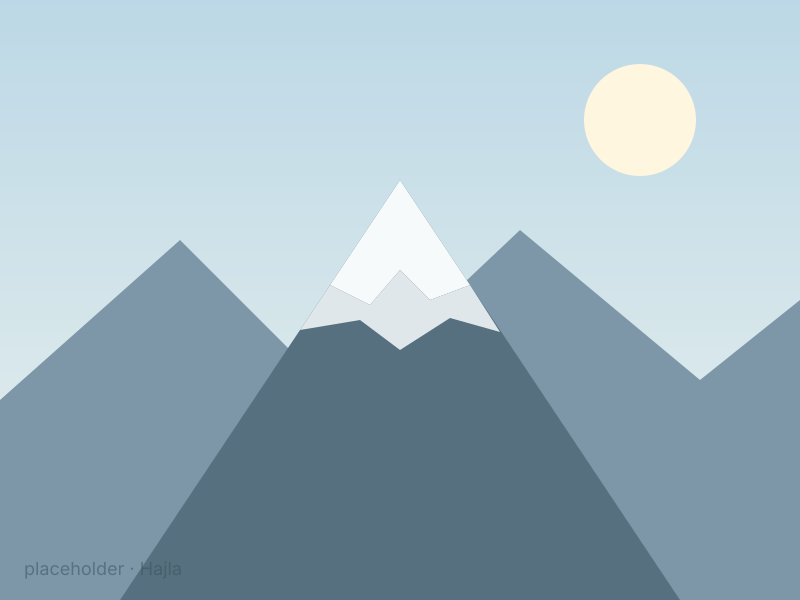
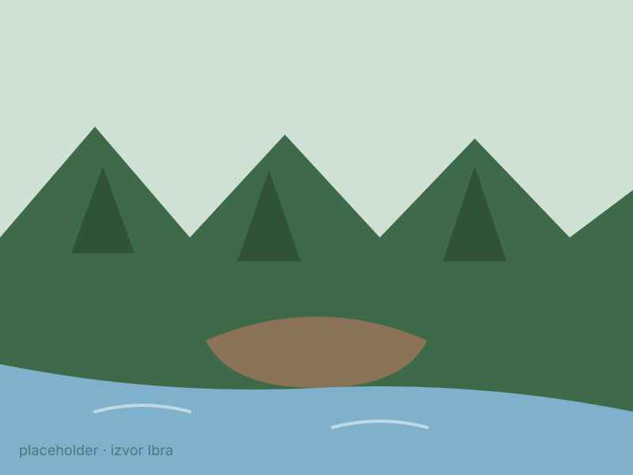

Planinski vijenci, izvor Ibra i staze za sve koji vole čist vazduh.
Krov Crne Gore
Rožaje se nalaze na oko 1.000 metara nadmorske visine, u kotlini koju čuvaju planine Hajla, Turjak, Žljeb i Štedim. Zbog visine i guste četinarske šume, vazduh je ovdje svjež i ljeti — zato grad zovu i „planinskim balkonom” sjevera.
Najviši vrh
Hajla je krovni vrh rožajskog kraja i jedna od najljepših planina u ovom dijelu Crne Gore. Ljeti je raj za planinare i ljubitelje fotografije, a sa vrha se pruža pogled na tri države.


Gdje rijeka počinje
Nedaleko od grada, ispod planine Hajle, izvire Ibar — rijeka koja kroz Rožaje teče i dalje put Srbije. Izvor je omiljeno izletište: hladna, bistra voda i sjenovita šuma idealni su za predah.
Aktivnosti
Označene i neoznačene staze ka Hajli, Turjaku i okolnim vrhovima.
Zimski centar nadomak grada — sniježni dani od kasne jeseni do proljeća.
Izvor Ibra i okolni proplanci idealni su za porodične izlete.